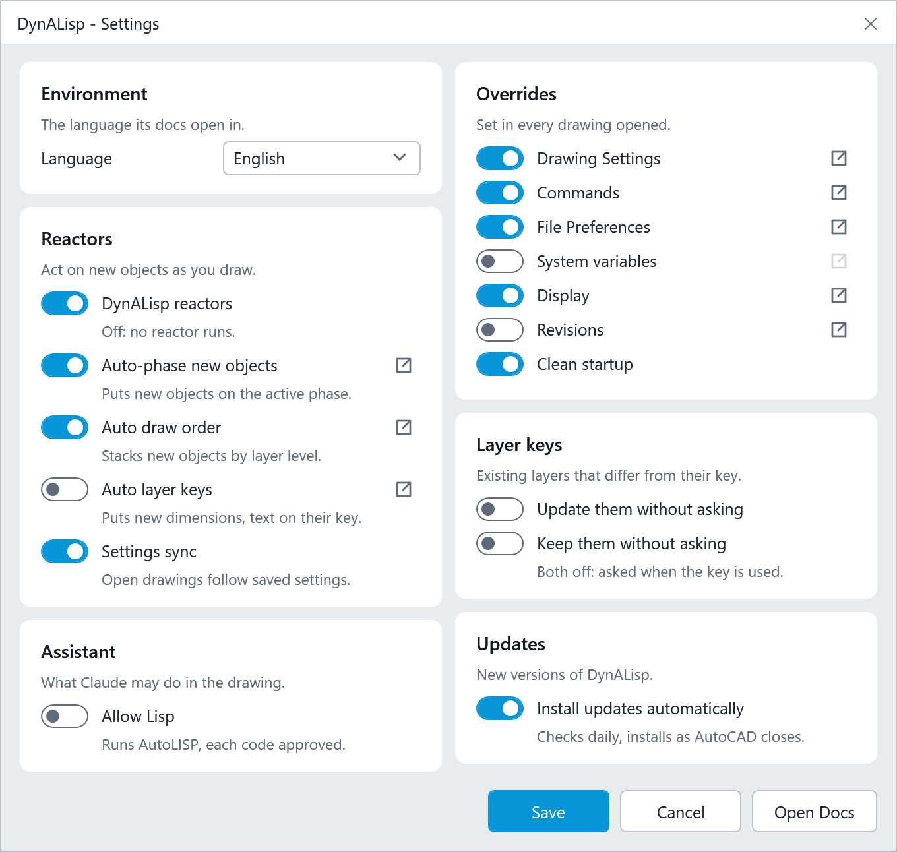

Fenêtres
| Chargement | Avec DynALisp, par AutoCAD lui-même (DynALisp.Windows.dll) |
| Requis | AutoCAD 2025 ou suivant pour Windows, 64 bits |
| Licence | Licence publique générale GNU v3 |
Description
Les fenêtres de DynALisp sont des fenêtres modernes affichées par un module d'extension qu'AutoCAD charge avec DynALisp : des sections en cartes, un interrupteur pour chaque paramètre activé ou désactivé, un texte lisible, les mêmes boutons dans chaque fenêtre, aux couleurs du thème d'AutoCAD. Elles remplacent une à une les boîtes de dialogue classiques d'AutoCAD, en commençant par la fenêtre Settings et les fenêtres qu'elle ouvre (Drawing Settings, Display, File Preferences, Output Prep), et la galerie Quick Draw, ses hachures dessinées telles qu'elles s'impriment. Une fenêtre fonctionne comme avant : les mêmes paramètres, les mêmes boutons, le même bouton Open Docs.

Utilisation
- Rien à activer : les fenêtres s'ouvrent dès que DynALisp est chargé.
- Lancez une commande qui a une fenêtre, comme Dyl-Settings.
- Le bouton carré d'ouverture à côté d'un paramètre ouvre sa propre fenêtre par-dessus la première. Son OK garde ce que vous avez changé, Cancel le remet comme avant ; la première fenêtre l'enregistre avec le reste.
Taille et position
- Une fenêtre ne s'ouvre jamais plus grande que votre écran : sur un petit écran, ou avec une grande mise à l'échelle de l'affichage de Windows, ses listes sont plus courtes, et ce qui ne tient toujours pas défile.
- Une fenêtre qui a une liste se redimensionne comme toute fenêtre de Windows : faites glisser ses bords ou un coin, double-cliquez sa barre de titre pour l'agrandir, faites-la glisser en haut de l'écran pour l'agrandir ou sur un côté pour en remplir la moitié (touche Windows + flèches aussi). Ses listes grandissent et rétrécissent avec elle ; le reste garde sa taille. Elle ne peut pas être plus étroite que son contenu, sauf pour les listes de certaines fenêtres (Assembly Presets), qui rétrécissent avec elle.
- Une telle fenêtre se rouvre là où vous l'avez laissée, à la taille où vous l'avez laissée (agrandie si elle l'était), chaque fenêtre pour elle-même, sur cet ordinateur. Laissée sur un écran qui n'est plus là, elle revient sur l'écran d'AutoCAD.
- Une petite fenêtre sans liste (une question, un nom, la fenêtre Settings) garde la taille de son contenu.
Notes
- Les fenêtres prennent les couleurs d'AutoCAD : gris-bleu foncé dans son thème sombre, gris clair dans son thème clair (Jeu de couleurs dans l'onglet Affichage de ses Options).
- Un paramètre grisé ne peut pas être changé pour l'instant : son interrupteur au-dessus est désactivé, ou son outil est désactivé dans la Startup Suite.
- Quand une fenêtre ne s'ouvre pas, la ligne de commande en donne la raison. Lancez Dyl-Diagnostics : il signale quand le module d'extension n'est pas chargé (un AutoCAD antérieur à 2015, le fichier bloqué par SECURELOAD, ou absent).
- AutoCAD 2010 à 2014 ne sont plus pris en charge : ils ne peuvent pas charger le module d'extension.
- Pour qui modifie DynALisp : la source est Installer\Windows, un seul projet compilé pour .NET 8 (AutoCAD 2025 et 2026) et pour .NET 10 (AutoCAD 2027 et suivants), les deux DLL validées dans git ; chaque fenêtre est un fichier .xaml du dossier Res de son module.